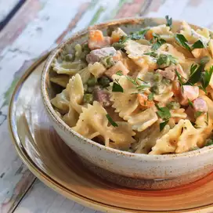

One-Pot Ham and Veggie Pasta

"This single-pot meal is the perfect way to use up leftover ham for a weeknight dinner. It's creamy, comforting, and quick-and-easy."
- Cook: 30 mins
- Total: 45 mins
- Prep: 15 mins
- Servings: 6
- Yield: 6 large servings
Ingredients:
- 1 tablespoon olive oil
- 2 1/2 cups, cubed, fully cooked ham
- 1/2 cup chopped onion
- 3 cloves garlic, minced
- 1 teaspoon Italian seasoning
- 1/4 teaspoon red pepper flakes
- Salt and pepper to taste
- 4 cups low-sodium chicken broth
- 1 1/4 cups fat free half-and-half
- 1/4 cup all-purpose flour
- 1 (16 ounce) package farfalle (bow-tie) pasta
- 2 cups frozen peas and carrots
- 1/2 cup grated parmesan cheese
- Chopped parsley for garnish
Steps:
-
Heat olive oil in a large pot over medium heat.
- Add ham and onion; saute for about 3 minutes.
- Add garlic and cook until fragrant, about 30 seconds
- Stir in Italian seasoning, red pepper flakes, salt and pepper; cook for 2 minutes
-
Whisk together chicken broth, half-and-half, and flour in a bowl until smooth; pour into the pot.
- Stir in farfalle pasta, cover, and cook for 15 minutes
-
Add peas and carrots. Cook until pasta is cooked through, about 8 more minutes.
- Stir in parmesan cheese and garnish with chopped parsley. Serve immediately
-
Enjoy!